Quick facts
Introduction
Gigantamax Garbodor is a Poison-type raid boss with unique access to G-Max Malodor. While not the strongest Gigantamax raid Pokémon, it can punish Grass and Fairy counters if not prepared. This guide explains everything trainers need to beat Gigantamax Garbodor reliably in Pokémon GO raids — from weaknesses and recommended Gigantamax counters to Dynamax picks, weather interactions, team-size guidance, and catch/reward tips.
Weaknesses & resistances
| Category | Details |
|---|---|
| Weak to |
Ground •
 Psychic Psychic
|
| Resists to |
 Fighting • Fighting •
 Poison • Poison •
 Bug • Bug •
 Fairy • Fairy •
 Grass Grass
|
Best Gigantamax Garbodor Counters
Gigantamax-type Counters
- Snorlax
- Gengar
Dynamax-type Counters
- Metagross
- Latios
- Excadrill
- Hatterene
- Latias
- Kabutops
Best Gigantamax Counters
Gigantamax Pokémon that amplify the right types give you a powerful edge. Below are top Gigantamax counters with short notes on why they excel vs G-Max Garbodor.
| Pokémon | Fast Moves | Gigantamax Moves | Charged Moves | Elite Moves | Best Moves |
|---|---|---|---|---|---|
 Gigantamax Charizard Gigantamax Charizard |
Air Slash, Fire Spin | G-Max Wildfire | Overheat, Fire Blast, Dragon Claw | Dragon Breath, Ember, Wing Attack, Flamethrower, Blast Burn | Fire Spin(13) and G-Max Wildfire(350) |
 Gigantamax Inteleon Gigantamax Inteleon |
Pound, Water Gun | G-Max Hydrosnipe | Shadow Ball, Water Pulse, Surf | - | Pound(6) and G-Max Hydrosnipe(350) |
 Gigantamax Snorlax Gigantamax Snorlax |
Lick, Zen Headbutt | G-Max Replenish | Heavy Slam, Earthquake, Hyper Beam, Outrage, Skull Bash, Body Slam, Superpower | Yawn | Zen Headbutt(11) and G-Max Replenish(350) |
 Gigantamax Kingler Gigantamax Kingler |
Metal Claw, Bubble | G-Max Foam Burst | Vise Grip, X-Scissor, Water Pulse, Crabhammer, Razor Shell | Mud Shot | Bubble(10) and G-Max Foam Burst(350) |
 Gigantamax Gengar Gigantamax Gengar |
Sucker Punch, Shadow Claw, Hex | G-Max Terror | Shadow Ball, Sludge Bomb, Focus Blast, Drain Punch | Lick, Dark Pulse, Shadow Punch, Sludge Wave, Psychic | Hex(8) and G-Max Terror(350) |
 Gigantamax Cinderace Gigantamax Cinderace |
Tackle, Fire Spin | G-Max Fireball | Flamethrower, Flame Charge, Focus Blast | - | Fire Spin(13) and G-Max Fireball(350) |
 Gigantamax Toxtricity Gigantamax Toxtricity |
Spark, Poison Jab, Acid | G-Max Stun Shock | Acid Spray, Wild Charge, Discharge, Power-Up Punch | - | Poison Jab(13) and G-Max Stun Shock(350) |
Dynamax & Support Picks
Not every raid group will have multiple Gigantamax picks. Dynamax Pokémon make excellent support, either by adding burst damage or soaking time during G-Max residual windows.
| Pokémon | Dynamax Moves | Fast Moves | Charged Moves | Elite Moves |
|---|---|---|---|---|
 Dynamax Metagross Dynamax Metagross |
Max Mindstorm, Max Flutterby, Max Steelspike | Zen Headbutt, Bullet Punch, Fury Cutter | Flash Cannon, Psychic, Earthquake | Meteor Mash |
|
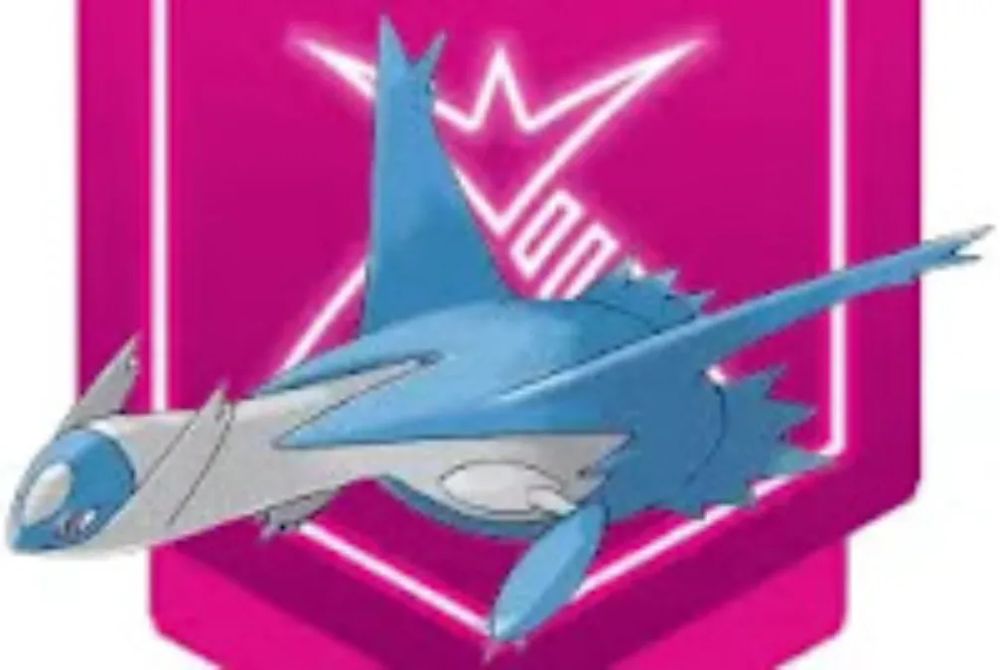Dynamax Latios
|
Max Wyrmwind, Max Mindstorm | Dragon Breath, Zen Headbutt | Psychic, Solar Beam, Dragon Claw, Aura Sphere | Luster Purge |
 Dynamax Excadrill Dynamax Excadrill |
Max Quake, Max Steelspike | Metal Claw, Mud Slap, Mud Shot | Rock Slide, Earthquake, Drill Run, Iron head, Scorching Sands | - |
|
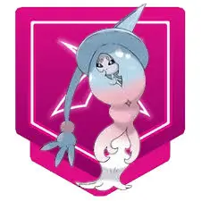Dynamax Hatterene
|
Max Starfall, Max MindStorm | Confusion, Charm, Psycho Cut | Psyshock, Psychic, Dazzling Gleam, Power Whip | - |
|
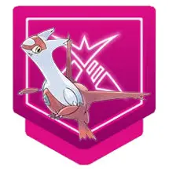Dynamax Latias
|
Max Wyrmwind, Max Mindstorm, Max Starfall | Dragon Breath, Zen Headbutt, Charm | Psychic, Thunder, Outrage, Aura Sphere | Mist Ball |
 Eternatus Eternatus |
Dynamax Cannon | Dragon Tail, Poison Jab | Sludge Bomb, Dragon Pulse, Flamethrower | - |
 Zacian Zacian |
Behemoth Blade | Metal Claw, Air Slash | Play Rough, Giga Impact, Close Combat | - |
 Dynamax Kingler Dynamax Kingler |
Max Geyser, Max Quake, Max Steelspike | Metal Claw, Bubble | Vise Grip, Water Pulse, X-Scissor, Crabhammer, Razor Shell | Mud Shot |
|
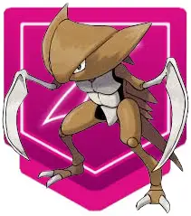Dynamax Kabutops
|
Max Knuckle, Max Quake, Max Geyser, Max Flutterby | Rock Smash, Mud Shot, Waterfall | Ancient Power, Stone Edge, Water Pulse | Fury Cutter |
|
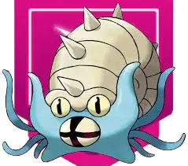Dynamax Omastar
|
Max Quake, Max Geyser, Max Rockfall | Mud Shot, Water Gun | Ancient Power, Hydro Pump, Rock Blast | Rock Throw, Rock Slide |
|
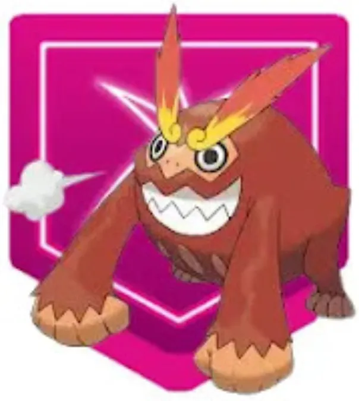Dynamax Darmanitan
|
Max Strike, Max Flare | Tackle, Fire Fang, Incinerate | Overheat, Focus Blast, Psychic, Rock Slide | - |
|
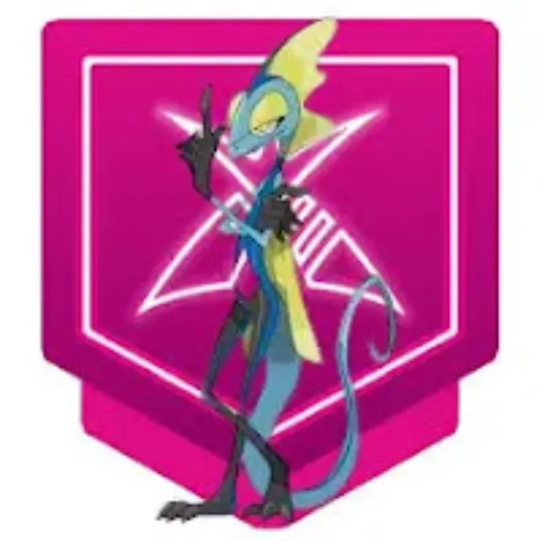Dynamax Inteleon
|
Max Geyser, Max Strike | Pound, Water Gun | Water Pulse, Surf, Shadow Ball | - |
|
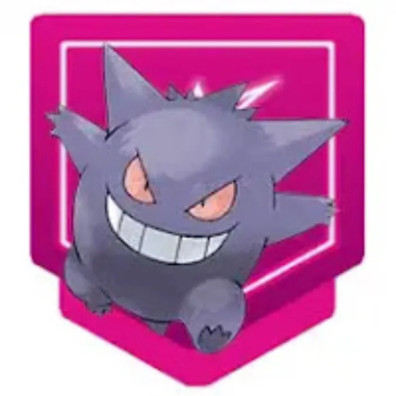Dynamax Gengar
|
Max Darkness, Max Phantasm | Sucker Punch, Hex, Shadow Claw | Focus Blast, Shadow Ball, Sludge Bomb, Drain Punch, Shadow Punch | Lick, Psychic, Dark Pulse, Sludge Wave |
|
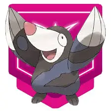Dynamax Drilbur
|
Max Strike, Max Quake | Scratch, Mud Slap | Dig, Drill Run, Rock Tomb | - |
|
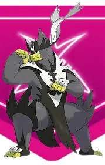Dynamax Urshifu
|
Max Geyser, Max Knuckle | Rock Smash, Counter, Waterfall | Brick Break, Dynamic Punch, Close Combat, Aqua Jet | - |
 Dynamax Hattrem Dynamax Hattrem |
Max MindStorm, Max Starfall | Confusion, Charm | Psybeam, Psychic, Dazzling Gleam | - |
 Dynamax Zapdos Dynamax Zapdos |
Max Lightning | Charge Beam | Zap Cannon, Thunder, Thunderbolt, Ancient Power, Drill Peck | Thunder Shock |
 Dynamax Moltres Dynamax Moltres |
Max Flare, Max Airstream | Fire Spin, Wing Attack | Fire Blast, Overheat, Heat Wave, Ancient Power | Sky Attack |
 Zamazenta Zamazenta |
Behemoth Bash | Metal Claw, Ice Fang | Moonblast, Giga Impact, Close Combat | - |
|
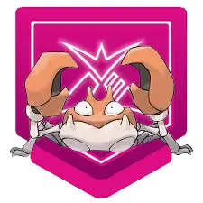Dynamax Krabby
|
Max Quake, Max Geyser | Bubble, Mud Shot | Bubble Beam, Vise Grip, Water Pulse, Razor Shell | - |
|
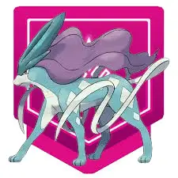Dynamax Suicune
|
Max Mindstorm, Max Hailstorm, Max Darkness | Extrasensory, Snarl, Ice Fang, Hidden Power | Hydro Pump, Bubble Beam, Water Pulse, Ice Beam, Scald | - |
 Dynamax Raikou Dynamax Raikou |
Max Lightning | Thunder Shock, Volt Switch | Shadow Ball, Thunder, Thunderbolt, Wild Charge, Aura Sphere | - |
Moves & Threats
Garbodor common fast moves are Take Down or Infestation. Charged moves include Body Slam or Acid Spray or Gunk Shot and Seed Bomb. G-Max Malodar not only delivers heavy damage but also leaves a damaging area for a short time — timing your swaps and using at least one bulky support reduces wipe risk.
Weather Effects & Battle Flow
Sunny weather : buffs Fire damage. Cloudy weather : buffs Fighting attackers.
Avoid bringing Grass or Fairy Pokémon—they take extra damage from Garbodor’s Poison STABs.
Team Size
Recommended: 15–20 trainers for comfortable clears with mixed player levels. With many Gigantamax / Dynamax counters, 10–14 can work. Under 8 trainers should be attempted only if all participants are high-level and coordinated with ideal counters and Dynamax/G-Max boosts.
Why Raid Gigantamax Garbodor?
Reasons include Pokédex entry, strong Poison attacker, shiny chance, and XL Candy farming.
When to avoid
Avoid using Fairy, Grass, or Fighting Pokémon—they are resisted and will faint quickly to Poison-type attacks.
FAQ
What is Gigantamax Garbodor type and weakness?
Garbodor is a pure Poison type. It is weak to Ground and Psychic type moves.
What does G-Max Malodar do?
It deals damage and also poisons all opposing pokemon.
What are good counters for G-Max Malodar?
Strong ground and psychic attackers such as Gigantamax Charizard, Gigantamax Kingler, Gigantamax Toxtricity, Dynamax Latios, Dynamax Latias.
Can Gigantamax Garbodor be shiny?
Yes, but in certain events.
Conclusion
Gigantamax Garbodor is a mechanically interesting raid boss: its Poison type is predictable, but the G-Max residual damage forces teams to plan for survivability, not just pure DPS. Prioritize Ground and Psychic Gigantamax picks, add Dynamax support for sustained windows, and include at least one high-TDO tank if your lobby is smaller. With the counters and tactics above, you’ll clear Garbodor efficiently and maximize your rewards.